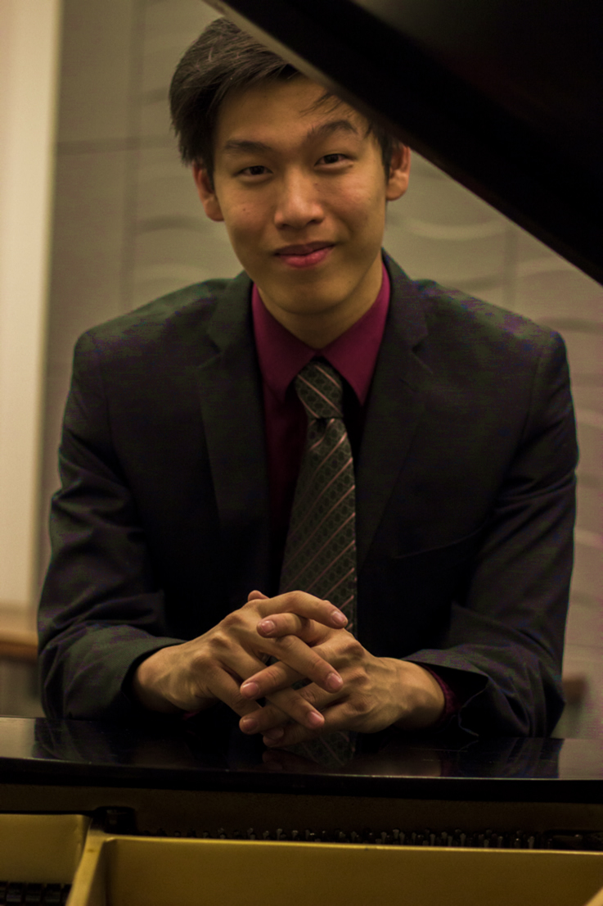

 |
Born in Vancouver, BC, Jason Fung spent his early years in Hong Kong, taking private piano lessons from the age of seven. Upon his subsequent return to Canada, he began formal studies with Dina Namer of Queen’s University, graduating with a Bachelor’s of Music with Distinction in 2016. Jason is the proud winner of the Queen’s 2016 Concerto-Aria competition and will be returning to Kingston to perform the Grieg Piano Concerto at the Isabel Bader Performing Arts centre in February 2017. He is currently completing a Master’s of Music in Piano Performance at the University of Ottawa under David Jalbert.
|
|---|